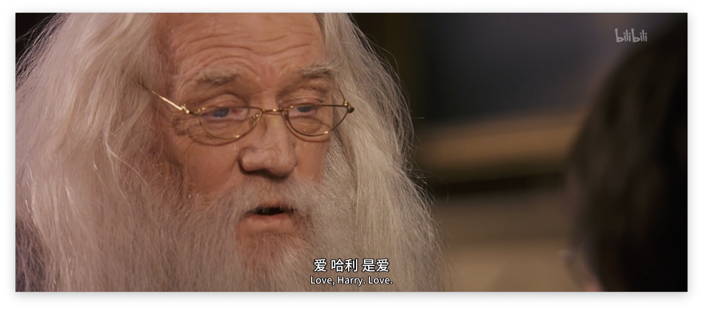
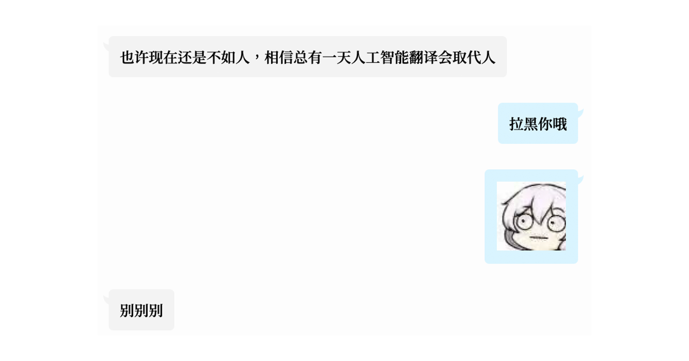

我开始不太明白我自己的态度了。
今天求索啁啾之后遇见孙燕姿有关「AI 孙燕姿」的回应，读后陷入一阵沉思。毕竟前夜刚结束与友人关于 AI 翻译的讨论，虽然逐渐滑向我个人的偏见与傲慢。
我诚然是有着偏见与傲慢的。我是人工智能技术广义上有限制性的支持者，至少来说我的日常也会开始用一些 Al 工具处理部分或许无用但是一定简单且机械的工作了。但是我对它不完全信任，我对它能力边界的认知始终存在着谨慎的不解。毕竟 之前 我曾提到过：「创造和判断仍旧会成为支撑我们发展的重要一环」，毕竟「人总要对自己有点基本自信」。
Hah，人总要对自己有点基本自信。
而友人论证的所谓「现在人工智能翻译感觉兼具人工翻译的准确和机翻的高效」，是我坚守意识形态阵地的最后堡垒。
无论是 ChatGPT 还是 AI 或者你想叫它什么名字，这个「东西」现在能够通过处理海量的信息，同时以最连贯的方式拼接组合手头的任务，来模仿和 / 或创造出独特而复杂的内容。等一下，人类不就是这样做的吗？
孙燕姿 - 我的 AI（转引自 TechFlow）
我对 AI 能力边界的认知始终存在着谨慎的不解。
这个不解立足在，这个「偏见与傲慢」究竟是我通过技术的演进看透了它的本质，还是我作为人类自身的不堪的挣扎？
单纯的「被替代」没什么可怕的，毕竟做翻译都是「用爱发电」，化身新时代的「老北京布鞋」反倒是变成了「非物质文化遗产」，我也得以立即退休坐享其成，岂不妙哉？但重要且不可替代的，翻译中的「人情味」是很重要的东西。这些工具目前距离「信」还有距离，「达」还有很长的路要走，「雅」仍旧是我们追求的高峰。我们的翻译当然也会出现问题，但这仍是经过消化和阐释的文本，无论何时，即使工具持续进化，我仍相信它会比无法理解文意的机器更有力量。
更重要的，无论是大模型或者你想叫它什么名字，这个「东西」至少目前而言，依旧无法离开「人」的存在。就和我 浅聊 ChatGPT 那时所说的一样：虽然通过不断引入并更新随机变量，人工智能也有可能做出创造性的工作，但和我们真正意义上的「创造」是完全没有关系的。
有些「创造」只有人类才能实现。
在 AI 依旧依赖人类无法独立奔跑的如今，它依旧重要且无趣。

就像在看那部改变了我们很多人生活的电影《瞬息全宇宙》，只不过在这种情况下，我不认为爱的理念可以挽救局面…… 在这无边无际的存在之海中，凡事皆有可能，凡事皆无所谓，我认为思想纯净，做自己，已然足够。
佳酿沉淀需要时间，但或许 AI 的发展正在超越时间。
虽然这话题曾经被我自己证伪过。无所谓了，我已经体谅自己了。
但是人总该认为点什么，相信点什么。毕竟「创造和判断仍旧会成为支撑我们发展的重要一环」，人总要对自己有点基本自信。
就写到这里，祝你一切顺利。

BTW，不合时宜地聊一句，孙燕姿小姐这篇文章写得相当开放明晰且不失温婉和风趣，是我看过的讨论 Generative AI 的文章中相当出彩的一篇（另外推荐 Ted Chiang 探讨 ChatGPT 的这篇）。但不得不调侃，国人对娱乐圈的「想象」或许已经被那些 might be called「Shoddy Goods」给「调教」得找不着北了，竟会有相当多朋友惊讶于孙燕姿小姐的文笔，她可是 NTU Singapore 毕业啊朋友们，纵使我也不认为文凭能够代表一切。